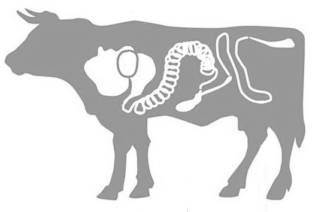

Dirgliosios žarnos sindromas: simptomai, gydymas, patarimai — GERA KARMA™
2020.10.28 06:29

× PIRKTI KODĖL PIRKTI SKAITYTI APIE MUS KONTAKTAI Kaip užsisakyti? Pristatymas Užsakymo sekimas Mano paskyra ×
Kažko ieškote? Pasinaudokite paieška.
NEMOKAMAS PRISTATYMAS VISOJE LIETUVOJE! Kaip užsisakyti? Pristatymas Užsakymo sekimas Mano paskyra PIRKTI KODĖL PIRKTI SKAITYTI APIE MUS KONTAKTAI 0Krepšelis
Dirgliosios žarnos sindromas: simptomai, gydymas, patarimai
PUBLIKAVO Andrejus Petruša on 2019-07-29 TEMA VirškinimasDirgliosios žarnos sindromas ( anglų k. “leaky gut syndrome” ) yra sparčiai plintanti būklė, milijonai žmonių kovoja su ja arba net nežino, kad ja serga. Iš jo pavadinimo galite manyti, kad dirgliosios žarnos (“pralaidaus žarnyno”) sindromas paveikia tik virškinimo sistemą, tačiau iš tikrųjų tai gali sukelti daug kitų sveikatos problemų.
Remiantis moksliniais tyrimais, alergijos maistui, energijos trūkumo, sąnarių skausmo, skydliaukės ligų, autoimuninių ligų ir lėto metabolizmo priežastis gali būti pažeisto žarnyno simptomų progresavimas.
Š iame straipsnyje konkrečiai aprašysiu, kaip galite išgydyti dirgliosios žarnos sindromą ir išspręsti sveikatos problemas, su kuriomis susidūrėte.
Kaip sužinoti, ar sergate dirgliosios žarnos sindromu?
Vienas iš didžiausių įspėjamųjų požymių, kad jums gali būti dirgliosios žarnos sindromas, tai jautrumas daugeliui maisto produktų, tačiau rekomenduojame atlikti dirgliosios žarnos sindromo tyrimą. Iš dalies suvirškinami baltymai ir riebalai gali prasiskverbti pro žarnyno gleivinę, patekti į kraują ir sukelti alerginį atsaką.
Š is alerginis atsakas nereiškia, kad jums būtinai pvz. išbers kūną, tačiau jis gali sukelti įvairius simptomus:
Pilvo pūtimas Jautrumas maisto produktams Skydliaukės susirgimai Nuovargis Sąnarių skausmas Galvos skausmas Odos problemos, pavyzdžiui, veido raudonis ir spuogai Virškinimo problemos Svorio priaugimasJei viską taip ir paliksime, tai gali sukelti sunkesnių sveikatos problemų, pvz., uždegiminę žarnyno ligą, dirglaus žarnyno sindromą, artritą, egzemą, psoriazę, depresiją, nerimą, migreninį galvos skausmą, raumenų skausmą ir lėtinį nuovargį.
Pasak â€Journal of Diabetes“, yra nemažai įrodymų, rodančių dirgliosios žarnos sindromą kaip pagrindinę autoimuninių ligų, įskaitant 1 tipo diabetą, priežastį [1].
Kita problema, susijusi su dirgliu (pralaidžiu) žarnynu, yra ta, kad jis gali sukelti gyvybiškai svarbių mineralų ir maistinių medžiagų, įskaitant cinką, geležį ir vitaminą B12, malabsorbciją.
Lektinai ir maisto produktai, kurie sukelia dirgliosios žarnos sindromą
Lektinai (red. bet kurios rūšies baltymai, dažniausiai augalinės kilmės, kurie specifiškai jungiasi su tam tikrais cukrais ir todėl sukelia tam tikrų ląstelių agliutinaciją) randami daugelyje maisto produktų, ne tik grūduose, ir jei vartojami mažesniais kiekiais organizmui problemų nekelia. Tačiau maisto produktai, kuriuose yra daug lektinų, yra verčiantys susirūpinti. Kai kurie lektinai ir maisto produktai, sukeliantys dirgliosios žarnos sindromą, yra kviečiai, ryžiai, spelta ir soja.
Daiginti ir fermentuoti grūdai sumažina fitatus ir lektinus, todėl šie maisto produktai yra lengviau virškinami. GMO ir hibridiniai maisto produktai dažniausiai turi didžiausią lektinų kiekį, nes jie buvo modifikuoti kovojant su defektais. Be to, glitimo turintys grūdai gali pažeisti žarnyno gleivinę ir galbūt sukelti dirgliosios žarnos sindromą. Kai žarnynas yra sveikas, retkarčiais galite vartoti grūdus, kurie buvo fermentuoti ir daiginti.
Tradicinis (pasterizuotas) karvių pienas yra dar vienas maistas, kuris gali sukelti dirgliosios žarnos sindromas. Pieno komponentas, kuris pakenks jūsų žarnynui, yra baltymų A1 kazeinas (red. sudėtinis pieno baltymas, išskirtas iš pieno, veikiant jį rūgštimis). Be to, pasterizacijos procesas sunaikins gyvybiškai svarbius fermentus ir probiotikus, todėl piene esantį cukrų kaip ir laktozę bus labai sunku virškinti. Dėl šios priežasties rekomenduoju pirkti tik natūralų (nepasterizuotą) pieną arba pieną iš A2 (red.– karvės, kurios turi A2 beta kazeiną) karvių. Taip pat tinkamas ir naudingas (jeigu nepasterizuotas) yra ir ožkų, bei avių pienas. Dažnai geriau virškinimas ir toleruojamas nei karvių pienas.
Cukrus yra dar viena medžiaga, kuri kels žalą jūsų virškinimo sistemai. Cukrus maitins mielių, Candida albicans ir blogų bakterijų augimą, o tai dar labiau pakenks žarnynui. Blogosios bakterijos iš tikrųjų sukuria toksinus, vadinamus eksotoksinais, kurie kenkia sveikoms ląstelėms ir gali pakenkti žarnyno sienelei.
Mityba esant dirgliosios žarnos sindromui ir keturių žingsnių jo išgydymo planas
Gera naujiena yra tai, kad yra būdas, kaip sėkmingai išgydyti žarnyną. Yra keturių pakopų procesas, kuris apima:
PAŠ ALINTI maisto produktus ir žarnyną žalojančius veiksnius PAKEISTI juos gydančiais maisto produktais ATKURTI žarnyno būklę vartojant tam tikrus papildus SUBALANSUOTI vartojant probiotikus1. Pašalinkite maisto produktus ir žarnyną žalojančius veiksnius
Labai svarbu pašalinti alergenus ir uždegiminius maisto produktus, pvz., nedaigintus grūdus, pridėtinį cukrų, GMO, rafinuotus aliejus, sintetinius maisto priedus ir tradicinius pieno produktus. Didžiausias toksiškas poveikis, kurį galima pašalinti, yra vandentiekio vanduo, pesticidai, NVNU ir antibiotikai, tačiau nepamirškite visada pasikonsultuoti su savo gydytoju, jei jis ar ji juos paskyrė jums.
2. Pakeiskite žarnyną žalojančius produktus žarnyną puoselėjančiais produktais
Jei sergate pralaidaus žarnyno sindromu, turite apsvarstyti galimybę pasirinkti pralaidaus žarnyno mitybą. Tokioje mityboje yra maisto produktų, kurie palaiko gijimą, nes jie yra lengvai virškinami ir gali padėti išgydyti žarnyną.
Čia yra pralaidaus/dirglaus žarnyno mitybos maisto produktų sąrašas:
Kaulų sultinys kaulų sultinyje yra kolageno ir aminorūgščių prolino ir glicino, kurie gali padėti išgydyti pažeistas ląstelių sieneles. Turėjau daug pacientų, kurie tris dienas gausiai vartojo kaulų sultinį, kad padėtų išgydyti dirgliosios žarnos sindromą ir autoimuninę ligą. Pilnas receptas jau greitai pasidalinsime, išmokinsime! Natūralūs rauginti pieno produktai tai ir probiotikai, ir trumposios grandinės riebalų rūgštys (SCFA), kurios gali padėti išgydyti žarnyną. Pasterizuotas kefyras, jogurtas, amasai (red. – soto kalba bendrinis fermentuoto pieno pavadinimas), sviestas ir naminiai sūriai yra geriausi probiotiniai maisto produktai. Fermentuotos daržovės sudėtyje yra organinių rūgščių, kurios subalansuoja žarnyno pH ir probiotikus, kad sustiprintų žarnyną. Rauginti kopūstai, kimči ir gira yra puikus jų šaltinis. Kokosų produktai visi kokoso produktai yra ypač naudingi žarnynui. Vidutinės grandinės riebalų rūgštys (MCFA), esančios kokosuose, yra lengviau virškinamos nei kiti riebalai, todėl jie gerai veikia pralaidų žarnyną. Be to, kokoso kefyras turi probiotikų, palaikančių jūsų virškinimo sistemą. Daigintos sėklos – chia sėklos, linų sėmenys ir kanapių sėklos yra puikus skaidulų šaltinis, galintis padėti palaikyti naudingų bakterijų augimą. Bet jei jums sunkus Dirgliosios žarnos sindromas, jums naudingiau gauti skaidulų iš garintų daržovių ir vaisių. Sveiki riebalai vartoti sveikus riebalus saikingai, tokius kaip kiaušinių tryniai, avokadai, ghi ir kokoso aliejus, yra naudinga žarnynui ir skatina jo gijimą. Omega-3 riebalai priešuždegiminiai maisto produktai, pvz., žole šeriamų galvijų mėsa, ėriena ir laisvėje pagautos žuvys, pavyzdžiui, lašiša, yra naudinga pralaidžiam žarnynui. Vaisiai suvartojant 1–2 porcijas vaisių kasdien yra naudinga pralaidžiam žarnynui. Galite patroškinti obuolius ir kriaušes garuose, kad padarytumėte naminį obuolių arba vaisių padažą. Vaisius geriau vartoti ryte ar pirmoj dienos pusėje.3. Padėkite žarnynui vartodami papildus
Yra daug papildų, kurie gali padėti palaikyti jūsų virškinimo trakto sveikatą ir apsaugoti žarnyno sienelės vidų nuo tolimesnės žalos.†Manau, šeši naudingiausi papildai pralaidžiam žarnynui yra probiotikai, virškinimo fermentai , l-glutaminas, saldymedžio šaknis, juodasis mumijus (shilajit) ir svilarožės šaknis.â€
Virškinimo fermentai užtikrina, kad maisto produktai bus visiškai suvirškinami, sumažinant tikimybę, kad dalinai suvirškinto maisto produktų dalelės ir baltymai pakenks žarnyno sienelei.† Todėl tai puiki prevencinė priemonė ir įrankis maksimaliai suvirškinti maistą prieš jam patenkant į žarnyną.â€
Kiti rekomenduojami produkai:
Probiotikai (50–100 bilijonų vienetų per parą) tai svarbiausias papildas, nes jis aprūpina žarnyną gerosiomis bakterijomis ir padeda panaikinti blogąsias bakterijas.†Aš rekomenduoju gauti probiotikų tiek su vartojamu maistu, tiek papildų forma. Jeigu gydydami dirgliosios žarnos sindromą tik pašalinsite žalingus dirgiklius, jums gali nepavykti jo aprūpinti naudingosiomis bakterijomis kurios sunaikins blogąsias bakterijas. Ieškokite tokių rūšių kaip Bacillus clausii, Bacillus subtilis, Saccharomyces boulardii ir Bacillus coagulans [2, 3, 4, 5] †L-glutaminas svarbus bet kuriam planui, skirtam išgydyti žarnyną. Glutamino milteliai yra esminis aminorūgščių priedas, kuris yra priešuždegiminis ir būtinas žarnyno gleivinės augimui ir regeneracijai. L-glutamino funkcija yra apsauginė; padengia ląstelių sienles ir saugo nuo dirgiklių [6] †Saldymedžio šaknis adaptogeninis augalas, padedantis subalansuoti kortizolio kiekį ir gerinantis rūgšties gamybą skrandyje.†Saldymedžio šaknis palaiko natūralius organizmo procesus stiprinandama skrandžio ir dvylikapirštės žarnos gleivinę [7] †Šis augalas yra ypač naudingas tiems, kam dirgliosios žarnos sindromas išsivystė dėl emocinio streso, nes jis reguliuoja kortizolio gamybą ir metabolizmą [8] †Juodasis mumijus dervos tipo vaistinė vaistažolė, dažnai naudojama Ajurvedos medicinoje, ji gali apsaugoti nuo skrandžio opų†, taip pat sumažinti uždegimą, kurį sukelia ar sunkina dirglus žarnynas [9, 10] †Svilarožės šaknis antioksidantų ir antihistamininių savybių turinti svilarožės šaknis yra puikus pasirinkimas bet kuriam natūralios medicinos kabinetui, ypač tokiam, kuris specializuojasi dirgliosios žarnos sindromo gydyme [11] â€Å altiniai ir nuorodos:
https://www.ncbi.nlm.nih.gov/pmc/articles/PMC2551660/ https://pdfs.semanticscholar.org/e066/52ba139eae0a56a010bc6ba1bfce5468c5ec.pdf https://www.ncbi.nlm.nih.gov/pubmed/3100070 https://www.ncbi.nlm.nih.gov/pubmed/12840682/%20 https://www.ncbi.nlm.nih.gov/pmc/articles/PMC2826289/ https://www.ncbi.nlm.nih.gov/pubmed/25972430 https://www.sciencedirect.com/science/article/pii/037851739400377H https://www.ncbi.nlm.nih.gov/pubmed/21896619 http://www.jpbsonline.org/article.asp?issn=0975-7406;year=2015;volume=7;issue=1;spage=56;epage=59;aulast=Shahrokhi https://www.ncbi.nlm.nih.gov/pubmed/2345464 https://www.ncbi.nlm.nih.gov/pmc/articles/PMC4518423/Įspėjimas ir išnašos:
†Šis teiginys nėra įvertintas Europos maisto saugos tarnybos (EFSA). Maisto papildas nėra maisto pakaitalas. Svarbi įvairi ir subalansuota mityba. ES teisės aktai draudžia reklamuojant maisto papildus teigti apie jų (ar jų sudėtyje esančių sudedamųjų dalių) gydomąsias ir profilaktines savybes, išskyrus, kai tokius teiginius patvirtina Europos Komisija. Mes neteigiame, kad UAB Gera karma parduodami maisto papildai (ar jų sudėtyje esančios sudedamosios dalys) turi gydomųjų ar profilaktinių savybių. Mūsų svetainėje pateikiama tik bendro pobūdžio informacija, kuri neturi daryti įtakos skaitytojo apsisprendimui įsigyjant ir/ar vartojant maisto papildus. Jei sergate specifine liga, ar vartojate papildomus vaistus ar maisto papildus, būtinai prieš pradėdami vartoti naujus maisto papildus pasikonsultuokite su savo gydytoju ar vaistininku. Straipsnyje pateikta informacija nėra autoriaus asmeninė nuomonė. Š i informacija nėra skirta reklamuoti maisto produktus ar papildus. Š i informacija negali būti interpretuojama kaip gydymo ar kitokio pobūdžio sveikatos klausimų sprendimo rekomendacija. Raginame sprendimus, susijusius su asmenine sveikata, priimti asmeniškai, įvertinus įvairius informacijos šaltinius. Jeigu pastebėjote netikslumų ar turite komentarų, nusiskundimų, patarimų dėl pateikto turinio, prašau susisiekite el. paštu [email protected] arba svetainėje nurodytais rekvizitais.
Dirgliosios žarnos sindromas Fermentai Leaky Gut Syndrome Probiotikai Virškinimas Virškinimo sistema Žarnynas Taip pat skaitykite Dumbliai nauda, faktai, vartojimas ir patarimai Next Reading Žmogaus virškinimo sistema kaip ji veikia?7 replies on “ Dirgliosios žarnos sindromas: simptomai, gydymas, patarimai “
Aldona
2020-02-05 at 11:16Ačiū jums uz patarimą
AtsakytiAmigo
2020-02-11 at 23:19Turiu pats sia liga. Per nakti neatsiranda ir per nakti nepasveiksi. Norint pasveikti reikia nustoti ryti saldumynus bei angliavandenius (irgi cukrus), kad blogosios bacilos (ang. candida) netureto is ko maitintis ir daugintis jusu zarnyne. Kai zarnynas usiveises siomis bacilomis jos ji ardo kol atsiranca mikro zaizdeles per kurias i krauja pakliuna nesuvirskintos maisto medziagos kurias puola imunitetas ko pasakoje ant odos atsiranda egzema, pleiskanos. Kremai nepades, nes egzema simptomas, sutrikurio zarnyno.
AtsakytiAndrejus Petruša
2020-02-11 at 23:57Sveiki, ačiū, kad pasidalinote. Taip, priežastys ir tokios gali būti ir kitokios ir viskas viename gali būti taip pat. Kompleksinis reikalas ir kaip sakote ne per vieną dieną “susigadina”, ne per vieną dieną ir susitvarko, todėl ateityje ruošime ir kitokios informacijos gidų, mitybos planų, testų ir video medžiagos, dalinsimės patirtimi sukaupta, naujausia informacija ir tikromis žmonių sėkmės ir pasveikimo istorijomis, kad būtų pats tikriausias įkvėpimas, kad su dideliu noru, pastangomis, dedikacija, valia ir disciplina, bei gera/patikrinta sistema galima pasiekti pačių geriausių rezultatų ne tik su šia liga. Gyvenimo būdas tinkamas yra labai svarbu, kaip ir daugelis stipriai sveikatinančių ir stiprinančių sveikatą praktikų apie kurias taip pat kalbėsime. Tik teks palaukti dar visur nespėjame, o mėgėjiškai ar neprofesionaliai ar neatsakingai pateikinėti nesinori. O ir pasveikimui iš komforto reikia gerokai išeiti daugeliui, todėl mažai progreso sveikstant, nes žmonės bijo/nenori atsisakyti kažko, keistis drąstiškai ir pan. ir todėl toliau kankinasi 🙂 Užburtas ratas su šia liga, ji vėliau lengvai labai “triggerinama” ir reikia daug daug disciplinos ir valios, kad suvaldyti ar jausti sveikimo simptomus.. Tai tikiuosi, kad Jūs atrandate/randate, kaip reikia gyventi, kad simptomai silpnėtų ir kada jie sustiprėja, ko vengti reikia.. Pats mokaisi iš savęs stebi save. Būni pats sau gydytojas ir pats sau pacientas.. Daug gali išmokti, sužinoti, pastebėti.. Tai sėkmės Jums kelyje! Linkėjimai 🙂
AtsakytiIrma
2020-09-10 at 11:03Labuka o ko atsisaket is mitybos?
AtsakytiAndrejus Petruša
2020-09-15 at 12:03Laba diena, Irma. Jeigu bandote įminti dirgliosios žarnos sindromą, tai teks minimalizuoti maistines skaidulas. Todėl tinka keto mityba, ten mažai angliavandenių = mažai skaidulų. Nes būtent jos ir DIRGINA ŽARNYNĄ. Linkėjimai!
AtsakytiNijolė
2020-02-19 at 23:18Ačiū. labai naudinga informacija.
AtsakytiIrma
2020-09-29 at 15:56As turiu ta lyga
AtsakytiPalikite komentarą Atšaukti atsakymą
Taisyklės Privatumo politika Karjera Partneriams DUK Visos autorinės teisės saugomos © 2020 GERA KARMA™ - Patentuotas ir saugomas prekės ženklas Lietuvoje.BIYOMA maisto papildai "Advanced Formula" čia ! Nemokamas pristatymas visoje Lietuvoje! Atšaukti
- Vandens žarnos | Guminės ir transportavimo žarnos - Hidrobalt
- Pramoninės žarnos - Hidrobalt
- Vandens žarnos - ErumAqua
- Lanksčios Žarnos - staliams.lt
- Žarnos, jungės dušams | Senukai.lt
- Žarnos
- Žarnos | TECHNOBALTIC
- Žarnos | www.siurbliai.lt
- Žarnos - Utenos Agroprekyba
- Storosios žarnos vėžio prevencinė programa
- Vandens žarnos | Guminės ir transportavimo žarnos - Hidrobalt
Pradinis » Komponentai pramonei » PRAMONINĖS ŽARNOS Ieškoti. Rodyti tik prekes sandėlyje Rodyti tik akcijines prekes Rodyti kainas su PVM PRAMONINĖS ŽARNOS. APKABOS (9) 5. 3. 1. PRAMONINĖS JUNGTYS (5) 2. 2. PNEUMOTRANSPORTO . VANDENIUI IR ORUI ...
- Pramoninės žarnos - Hidrobalt
Žarnos Jungimo movos Greitos jungtys Kištukai Oro paskirstytojai Antgaliai Poliravimui/ šlifavimui Pneumatiniai rinkiniai Pneumatiniai siaurapjūkliai AUTOSERVISO ĮRANKIAI Variklio ardymo, paskirstymo velenų fiksavimo, diržo, pompos skremulio, smagračio, alkūninių velenų įrankių rinkiniai Įrankiai variklio remontui Veleno remonto ...
- Vandens žarnos - ErumAqua
Gaisrinės žarnos vidaus čiaupams komplektas Ø 52 mm. (ilgis 20 m., 2galvutės GR-50(GOST ) 10 bar. Pagaminta ES
- Lanksčios Žarnos - staliams.lt
– Apie mus – Kontaktai – Privatumo politika – Pristatymas ir grąžinimas . Utenos Agroprekyba, UAB Stoties g. 28, Utena +370 699 95478. utenosagroprekyba@gmail.com
- Žarnos, jungės dušams | Senukai.lt
Dirgliosios žarnos sindromas (anglų k. “leaky gut syndromeâ€) yra sparčiai plintanti būklė, milijonai žmonių kovoja su ja arba net nežino, kad ja serga.Iš jo pavadinimo galite manyti, kad dirgliosios žarnos (“pralaidaus žarnynoâ€) sindromas paveikia tik virškinimo sistemą, tačiau iš tikrųjų tai gali sukelti daug kitų sveikatos problemų.
- Žarnos
Kraujavimas iš virškinamojo trakto – tai ūmus, gausus, dažnai lėtinis ir nepastebimas arba ,,slaptas“ kraujavimas iš viršutinės virškinimo kanalo dalies (stemplė, skrandis, dvylikapirštė žarna) ar apatinės virškinimo kanalo dalies (tuščioji, klubinė, storoji ir tiesioji žarna). Iš visų kraujavimo iš virškinamojo kanalo atvejų apie 80–90 % yra kraujavimas iš ...
- Žarnos | TECHNOBALTIC
Lanksčios žarnos. Read more. Prekių pristatymas. Prekės bus atvežtos į bet kurį Lietuvos miestą ar gyvenvietę, Jūsų nurodytu adresu, iki pat durų.
- Žarnos | www.siurbliai.lt
Dušo žarna Thema Lux 700015, 150 cm, 1/2'' Medžiaga: Nerūdijantis plienas, Polivinilchloridas (PVC) Žarnos ilgis: 150 cm
- Žarnos - Utenos Agroprekyba
Storosios žarnos vėžio prevencinė programa. Storosios žarnos vėžio ankstyvosios diagnostikos prevencinė programa teikiama asmenims nuo 50 m. iki 74 m. amžiaus, vieną kartą per dvejus metus. Dėl dalyvavimo programoje turėtų kreiptis į savo šeimos gydytoją. Programos priemonės:
- Storosios žarnos vėžio prevencinė programa
Reikalingos pramoninės žarnos vandeniui? Susipažinkite su mūsų asortimentu! Apollo SE, 202AA, Nettuno FF, Mercurio M, Hilcoflex, Klenet, Ragno CR ir kt.
Pradinis » Komponentai pramonei » PRAMONINĖS ŽARNOS Ieškoti. Rodyti tik prekes sandėlyje Rodyti tik akcijines prekes Rodyti kainas su PVM PRAMONINĖS ŽARNOS. APKABOS (9) 5. 3. 1. PRAMONINĖS JUNGTYS (5) 2. 2. PNEUMOTRANSPORTO . VANDENIUI IR ORUI ...
Žarnos Jungimo movos Greitos jungtys Kištukai Oro paskirstytojai Antgaliai Poliravimui/ šlifavimui Pneumatiniai rinkiniai Pneumatiniai siaurapjūkliai AUTOSERVISO ĮRANKIAI Variklio ardymo, paskirstymo velenų fiksavimo, diržo, pompos skremulio, smagračio, alkūninių velenų įrankių rinkiniai Įrankiai variklio remontui Veleno remonto ...
Gaisrinės žarnos vidaus čiaupams komplektas Ø 52 mm. (ilgis 20 m., 2galvutės GR-50(GOST ) 10 bar. Pagaminta ES
– Apie mus – Kontaktai – Privatumo politika – Pristatymas ir grąžinimas . Utenos Agroprekyba, UAB Stoties g. 28, Utena +370 699 95478. utenosagroprekyba@gmail.com
Dirgliosios žarnos sindromas (anglų k. “leaky gut syndromeâ€) yra sparčiai plintanti būklė, milijonai žmonių kovoja su ja arba net nežino, kad ja serga.Iš jo pavadinimo galite manyti, kad dirgliosios žarnos (“pralaidaus žarnynoâ€) sindromas paveikia tik virškinimo sistemą, tačiau iš tikrųjų tai gali sukelti daug kitų sveikatos problemų.
Kraujavimas iš virškinamojo trakto – tai ūmus, gausus, dažnai lėtinis ir nepastebimas arba ,,slaptas“ kraujavimas iš viršutinės virškinimo kanalo dalies (stemplė, skrandis, dvylikapirštė žarna) ar apatinės virškinimo kanalo dalies (tuščioji, klubinė, storoji ir tiesioji žarna). Iš visų kraujavimo iš virškinamojo kanalo atvejų apie 80–90 % yra kraujavimas iš ...
Lanksčios žarnos. Read more. Prekių pristatymas. Prekės bus atvežtos į bet kurį Lietuvos miestą ar gyvenvietę, Jūsų nurodytu adresu, iki pat durų.
Dušo žarna Thema Lux 700015, 150 cm, 1/2'' Medžiaga: Nerūdijantis plienas, Polivinilchloridas (PVC) Žarnos ilgis: 150 cm
Storosios žarnos vėžio prevencinė programa. Storosios žarnos vėžio ankstyvosios diagnostikos prevencinė programa teikiama asmenims nuo 50 m. iki 74 m. amžiaus, vieną kartą per dvejus metus. Dėl dalyvavimo programoje turėtų kreiptis į savo šeimos gydytoją. Programos priemonės:
Reikalingos pramoninės žarnos vandeniui? Susipažinkite su mūsų asortimentu! Apollo SE, 202AA, Nettuno FF, Mercurio M, Hilcoflex, Klenet, Ragno CR ir kt.
